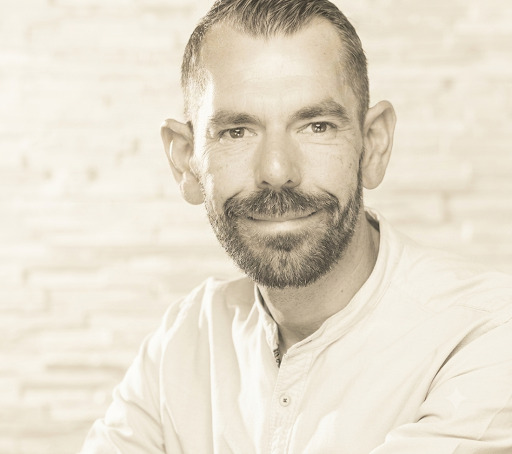
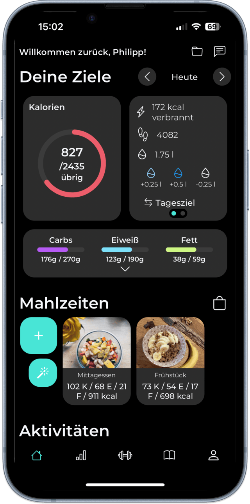

Ernährungs- & Laufcoaching
Keine Crash-Diät, kein Verbot, kein Dogma. Wir schauen uns wertfrei an, wie Du Dich heute ernährst und bauen daraus Schritt für Schritt eine Ernährung die zu Deinem Alltag und Deinem Ziel passt.


Kommt Dir das bekannt vor?
„Ich weiß eigentlich, was gesund ist — kriege es aber einfach nicht nachhaltig in meinen Alltag integriert.“
„Ich will weg von dieser Ganz-oder-gar-nicht-Mentalität, bei der ein kleiner Ausrutscher gleich den ganzen Erfolg umwirft.“
„Ich habe keine Lust mehr auf extreme Verbote und Hypes, die nach ein paar Wochen doch wieder im Sand verlaufen.“
Mein Ansatz
Hi, ich bin Patrick — und ich kenne die Diät-Spirale aus eigener Erfahrung. Ich habe früher vieles ausprobiert: von extremen Crash-Diäten bis hin zu exzessivem Sport. Kurzfristig hat das funktioniert. Nach ein paar Wochen waren die Kilos zurück.
Nicht das Extreme gewinnt. Sondern das, was zu Dir passt und was Du kontinuierlich in Dein Leben integrieren kannst.
Ernährungsberater B-Lizenz
Zertifikat ansehen →So arbeiten wir zusammen
30 Min., kostenlos und unverbindlich
45 Min. zu Vorgeschichte & Alltag
1 Woche tracken, ungefiltert
Gemeinsamer Fahrplan
Bis daraus Routine wird
Das Prinzip dahinter
In der ersten Woche ist die Kalorien- und Nährstoffanzeige in Deiner App bewusst ausgeblendet. Du trackst — siehst aber keine Zahlen.
Ohne Anzeige entsteht ein unverfälschtes Bild. Erst nach unserer gemeinsamen Auswertung schalte ich Dein Dashboard vollständig frei.

Ernährungscoaching
Von der ehrlichen Bestandsaufnahme bis zur nachhaltigen Umsetzung — Das Fundament, Der Weg und Die Nachhaltigkeit.
Alle Pakete ansehenWissen für Deinen Alltag
Was Klienten sagen
„Nach jahrelangen Diäten habe ich dank der alltagstauglichen Beratung meine Ernährung endlich dauerhaft umgestellt.“
Keine strengen Verbote, sondern ein nachhaltiges Konzept, das perfekt in den Büroalltag passt. Jeden Cent wert.
Paul, 43 Jahre
„Keine Standard-Pläne, keine Verbote: Statt starrer Vorgaben gab es echtes Verständnis für Ernährung. Die Anpassungen kamen ganz automatisch – auf manches verzichte ich heute völlig freiwillig, weil ich weiß, was meinem Körper guttut.“
Laura, 38 Jahre
Noch unsicher?
Du weißt noch nicht genau, welcher Weg für Dich der richtige ist? Dann buch Dir Dein kostenloses Erstgespräch. In diesen 30 Minuten:
Bevor Du fragst
Nein. Die gesamte Zusammenarbeit läuft online — Strategiegespräch, Auswertung und Live-Calls per Video.
In der ersten Woche trackst Du Deine Ernährung ganz normal weiter, aber ohne dass Kalorien- oder Nährstoffwerte angezeigt werden.
Die Pakete starten bei 149 € (Das Fundament, 3 Wochen) und reichen bis 357 € für 3 Monate (Die Nachhaltigkeit). Details auf der Pakete-Seite.
Direkter Draht